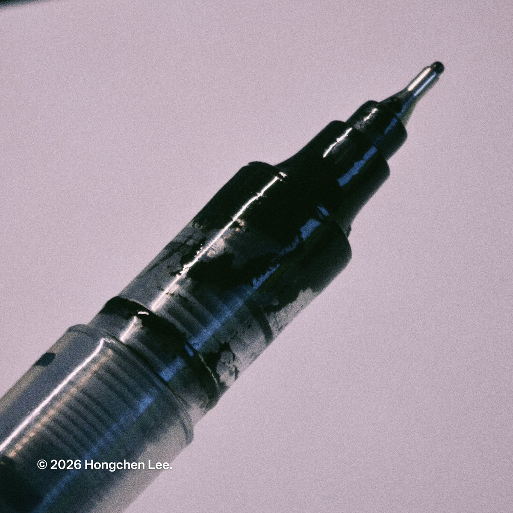
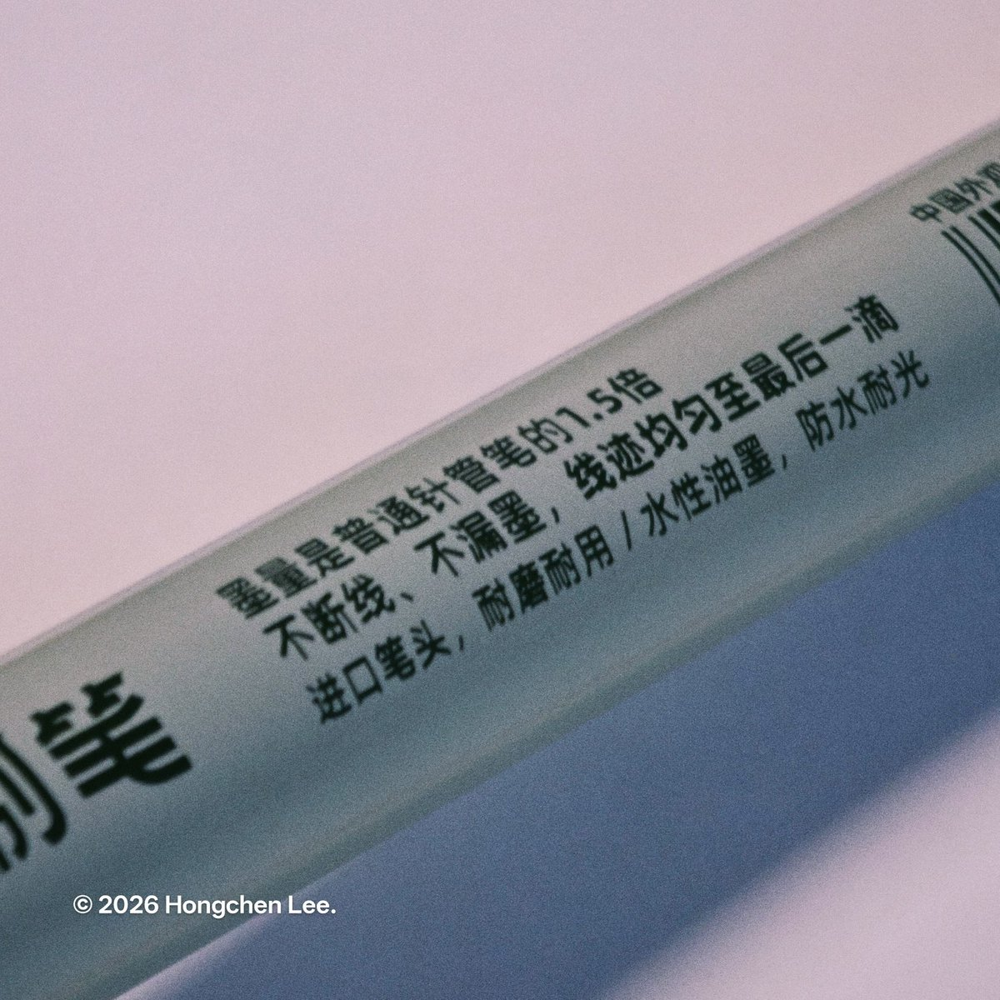

御坂 O.o 雪春📕 （雪似梅花）爱这个世界Minocycline
@0502railgun1949
@Rorochan___2001 自从用了百乐之后根本不存在摔断墨的问题
事实上是比之前用国产笔利用效率要更高的
而且体验更好
只不过得力的针管笔还不错，像你图片所示这种是同一类型
这个东西我也没摔断过水，而且可以保持很久墨不干
就是遇到比较差的纸，比如学校的再生纸试卷，会出现毛细现象


辰辰不愛吃菠菜🏳️⚧️
@Rorochan___2001
国产文具的一大共同点就是极端的墨水量，但是其笔尖和结构寿命却往往不足其墨水量使用量的1/4。愚以为这是一种新的材料浪费。对于墨水和塑料而言都是。
写一半笔尖珠就脱离或者无故飙墨应该是很多朋友的学生时代痛楚叭…… https://t.co/iZAh8cG509